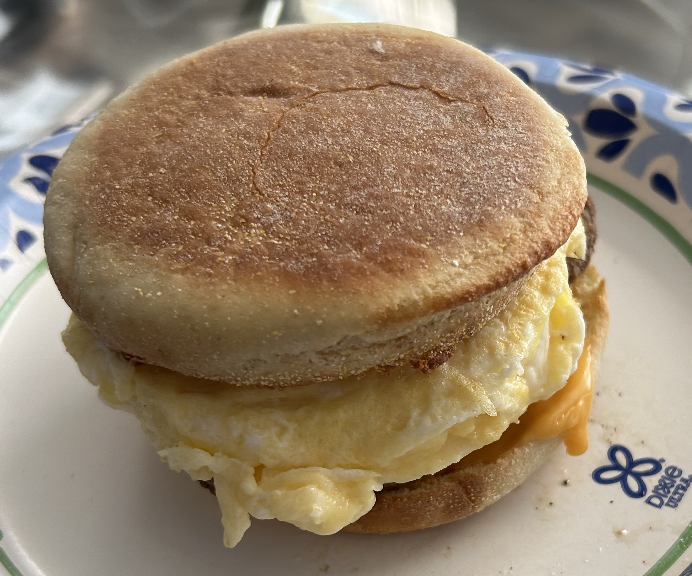

Breakfast Sandwhich

Mouthwatering morning breakfast sandwich
Make this quick and simple breakfast sandwich in the morning for your family or just yourself. The ingredients are easy to find and put together.
Ingredients
- 1 English muffin - buttermilk (optimal)
- 1 Slice of american cheese
- 1 Bunsize pork or turkey breakfast sausage
- 2 Eggs
- Ketchup (optional)
Steps
- Put english muffin in airfyer at 400 degrees for 5 minutes
- After 5 minutes put the slice of cheese on one side of the egnlish muffin
- Whisk eggs in a bowl and then heat up pan
- Cook eggs in pan and shape into a circle or use a egg ring
- Heat up sausage patty
- Assemble sandwhich and enjoy